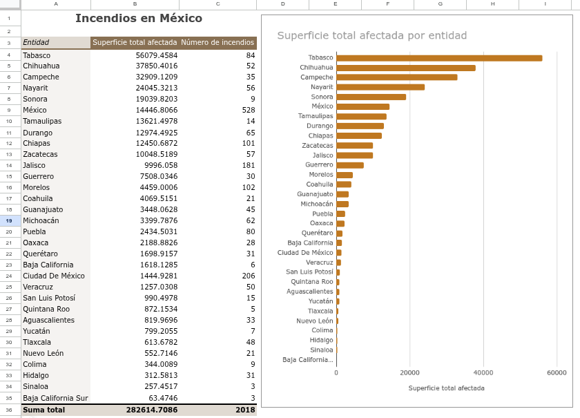
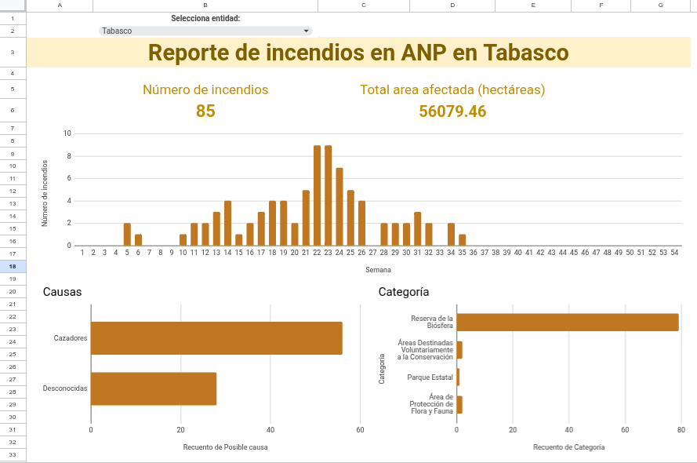
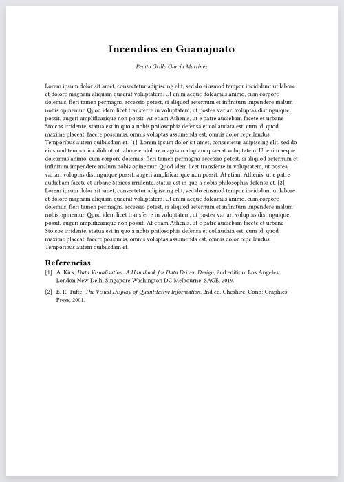

5 Práctica 1: Incendios en ANP
En esta práctica debes asesorar a una organización ambientalista que quieren empezar un programa de combate de incendios en las Áreas Naturales Protegidas (ANP). A esta organización le gustaría tener un reporte que hable la situación general de los incendios en las ANPs en México y que detalle la situación en una entidad particular. Te solicitan que investigues los datos del Monitor de incendios forestales en Áreas Naturales Protegidas administrada por la Comisión Nacional Forestal (CONAFOR) y la Comisión Nacional de Áreas Naturales Protegidas (CONANP).
Algunas preguntas interesantes que serían útiles a explorar para la organización ambientalista son:
- ¿Cuál es la entidad con mayor número de incendios?
- ¿Cuáles son las principales causas de incendios a nivel nacional y/o a nivel de entidades?
- ¿Cuáles son los tipos de vegetación más afectados a nivel nacional y/o a nivel de entidades?
- ¿En qué periodos del año hay más incendios?
Para saber más sobre las causas y manejo de incendios puedes consultar la Guía de incendios para comucadores de la CONAFOR.
Para esta práctica deberás crear lo siguiente:
- Una tabla y/o gráfica que resuma alguna variable sobre la situación de los incendios en las entidades de la república
- Un tablero interactivo que permita explorar gráficas y variables los de incendios para cada entidad.
- Un breve reporte que discuta tus resultados.



5.1 Instrucciones
5.1.1 Obtener los datos
- Entra a la página del Monitor de incendios forestales en Áreas Naturales Protegidas
- Selecciona el año 2025 y da click en Filtrar para quedarte solo con los datos del 2025.
- Descarga los datos en archivo csv en la tabla que se encuentra hasta abajo de la página.
- Carga los datos en una hoja de Google sheets
5.1.2 Entendiendo los datos
Las variables que contiene la base de datos son las siguentes:
- Semana: número de semana del año cuando se registró el incendio.
- Área natural protegida: nombre del ANP donde se registró el incendio.
- Categoría: categoría del ANP.
- Tipo: tipo de ANP (federal, estatal, municipal)
- Estado: entidad federativa en la cual ocurrió el incendio.
- Municipio: municipio en el cual ocurrió el incendio.
- Posible causa: posible causa del incendio.
- Tipo de vegetación: tipo de vegetación donde ocurrió el incendio.
- Superficie: área afectada por el incendio (en ha).
- Total dias persona: número de combatientes del incendio (calculado en días/persona, que corresponde a una jornada laboral de 8 horas).
- Tipo de atención: tipo de atención que se le dió al incendio (combate o monitoreo).
- Latitud y Longitud: latitud y longitud del registro del incendio.
5.1.3 Construye una tabla dinámica
Crea una tabla dinámica que resuma información a nivel de las entidades sobre los incendios. La tabla debe incluir:
- Una columna donde se resuma la la superficie total afectada por cada entidad.
- Una columna adicional que resuma información de una variable de tu interés.
- Opcionalmente puedes crear una gráfica a partir de los datos de tu tabla.
5.1.4 Construye un tablero interactivo
El dashboard debe cumplir los siguientes requisitos:
- Tener un desplegable que permita seleccionar una entidad.
- Un monitor que muestre el número total de incendios que hubo en la entidad seleccionada.
- Un monitor que muestre el área total afectada en la entidad seleccionada.
- Una gráfica que muestre el número de incendios que hubo por cada semana del año.
- Una gráfica de barras que muestre el las principales causas de incendios en la entidad seleccionada.
- Una gráfica extra que tu elijas que muestre información sobre la entidad seleccionada.
5.1.5 Escribe un reporte
- Elige una entidad.
- Interpreta tus gráficas y escribe un breve reporte describiendo tus principales hallazgos.
El reporte debe cumplir los siguientes requisitos:
- Tener una extensión máxima de 300 palabras.
- Incluir:
- Un título descriptivo
- Explicar de donde provienen los datos
- Explicar los principales hallagos (e.g., temporadas con más incendios, principales causas, área total afectada, que posición de área afectada ocupa la entidad con respecto a todas las entidades de la república, etc.)
- Una reflexión de qué se podría hacer para tener un mejor manejo de los incendios en la entidad que elegiste.
5.1.6 Entrega
Al Brightspace debes subir:
- El reporte como un archivo pdf
- El enlace a tu hoja de cálculo donde estan tus tablas, gráficas y tablero (asegúrate de dar los permisos adecuados para que pueda acceder a tu hoja de cálculo).